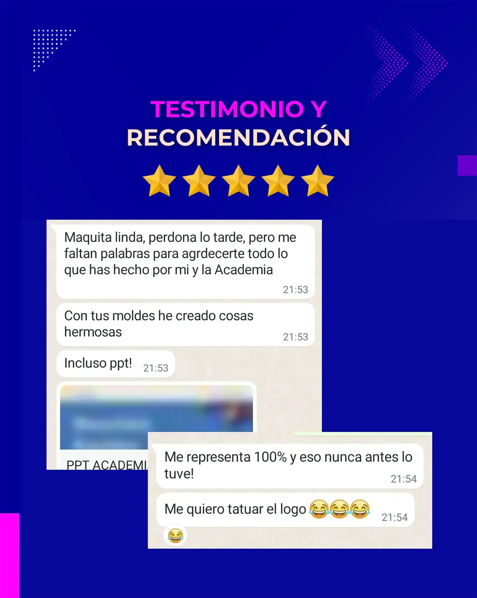

Detalles del proyecto
Herramientas utilizadas
Colaboradores/Stakeholders
Contexto
Doble Espiral Academia necesitaba 18 diseños para sus redes sociales (Instagram, Facebook y YouTube), reels y covers—que encarnaran la unión de la espiritualidad matemática y el aprendizaje orgánico, reforzando su propuesta de e-learning.
Desafío
Crear una línea gráfica que resonara con el simbolismo del girasol, doble espiral y su proyecto educativo. La clienta buscaba activamente amar, resonar, profesionalizar y sostener en el tiempo su nueva marca, y que fuera fácil de editar en Canva para asegurar escabilidad y su autonomía.
Empresa/Cliente: Doble Espiral Academia
Proceso & Aprendizajes
Investigación empática: Entrevistas y exploración de referencias para capturar sensaciones subconscientes de la clienta.
Card Sorting & A/B Testing: Gracias a estas técnicas pude ponerme en los zapatos de mi clienta, entender su forma de pensar y sus gustos, y, a partir de tres propuestas gráficas, pulir colores, tipografías y jerarquías hasta dar con un diseño claro, amigable y que reflejara por completo su esencia.
Prototipado en Canva: Diseñé propuestas iniciales y coordiné tres ciclos de feedback hasta la versión final.
Resultados
Plantillas versátiles: Diseñé 18 plantillas versátiles —carruseles, reels, portadas y más— inspiradas en girasoles y doble espiral, para dar a la empresa una imagen profesional que no solo llamara la atención, sino que conectara con el propósito y la transformación personal y profesional de la clienta, transmitiendo coherencia y solidez en cada pieza.
Escalabilidad real: La clienta aplicó los diseños en lápices, libretas y presentaciones.
Satisfacción: “Estos diseños me representan 100%! Y eso nunca antes lo tuve!”—comentó la clienta.
Enfoque Social Media Designer & UX Researcher
Inicié el proyecto con una entrevista abierta que aportó datos emocionales, estéticos y estratégicos, definiendo el tono, el estilo visual y las sensaciones que debía transmitir la marca. A continuación, utilicé card sorting para jerarquizar contenidos y formatos (carruseles, reels, testimonios) y pruebas A/B para seleccionar las variantes de color y tipografía que mejor resonaran con la clienta. La observación participativa reveló puntos críticos de usabilidad, lo que nos llevó a crear prototipos en Canva y validarlos en tres ciclos de feedback. El entregable final fueron 18 plantillas alineadas con la identidad de Doble Espiral, que combinan estética espiritual, funcionalidad y facilidad de edición, junto con recomendaciones de uso para asegurar una implementación consistente en los canales de redes sociales.
Testimonios & Referencias
-

Ago 2024 |Freelancer
Testimonio de Proyecto“Maquita linda, perdona lo tarde, pero me faltan palabras para agradecerte todo lo que has hecho por mí y la Academia. Con tus moldes he creado cosas hermosas, ¡incluso PPT! Me representa 100% y eso nunca antes lo tuve!”
Sandy Schumacher
Fundadora y CEO de Academia Doble Espiral